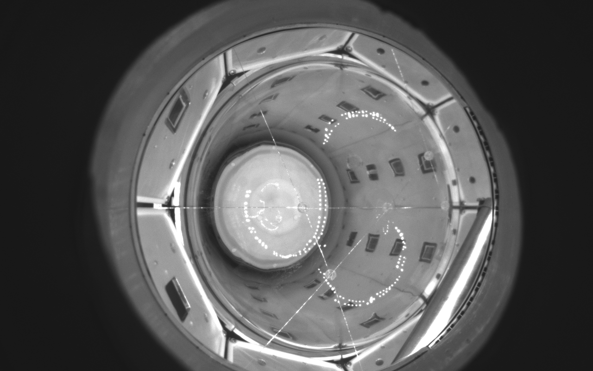
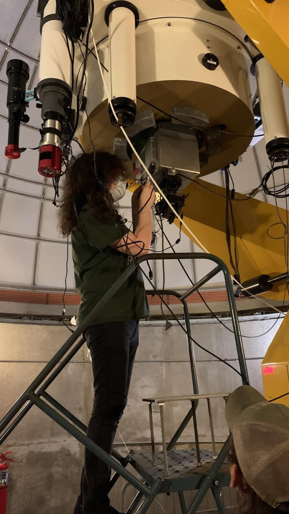

i do particle and astro physics research sometimes. here's some of the stuff i've worked on, not meant to be a full cv or anything.
i worked in person at fermilab on the scintillating bubble chamber (SBC), doing maintenance and data collection runs. i build reconstructions of bubble events from multiple detector types (silicon photomultipliers and piezoelectrics), wrote an algorithm for bubble multiplicity calculation and visualization, and led a handscanning campaign through tens of thousands of nucleation events. my current work is rendering synthetic data sets for a better understanding of our parameters.

i built an astronomical data reduction pipeline, benchmarked it against the landolt standard stars, and used it to help characterize atmospheric seeing (FWHM) at the observatory i worked at.
i also worked as a senior telescope operator, running an observatory, writing and delivering public astronomy talks, and maintaining an astronomical imaging pipeline as a github software maintainer.
i optimized simulations for satellite scheduling and built procedures for recovering scheduled observations after time-sensitive interruptions, for the AXIS space telescope.
